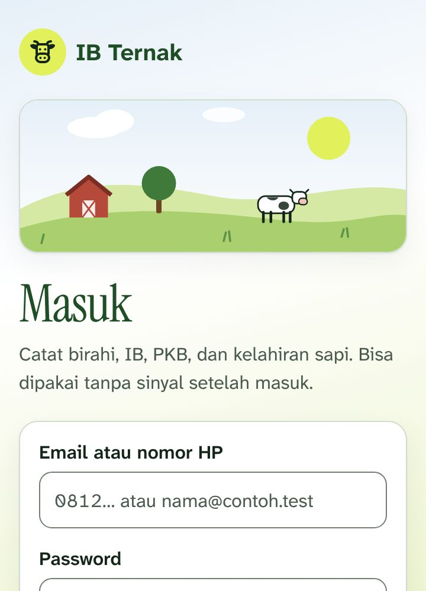
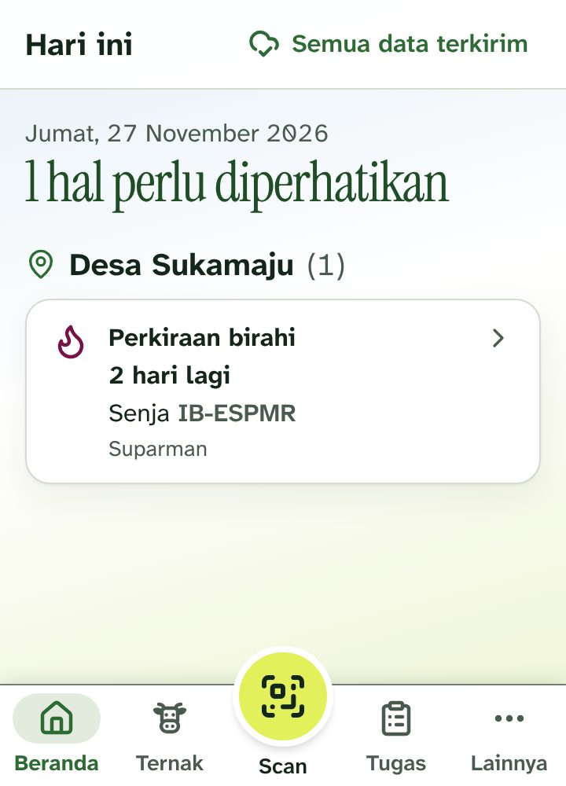
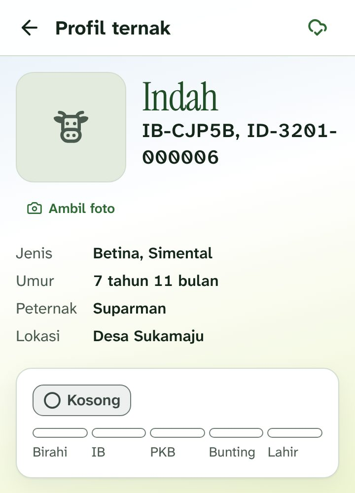
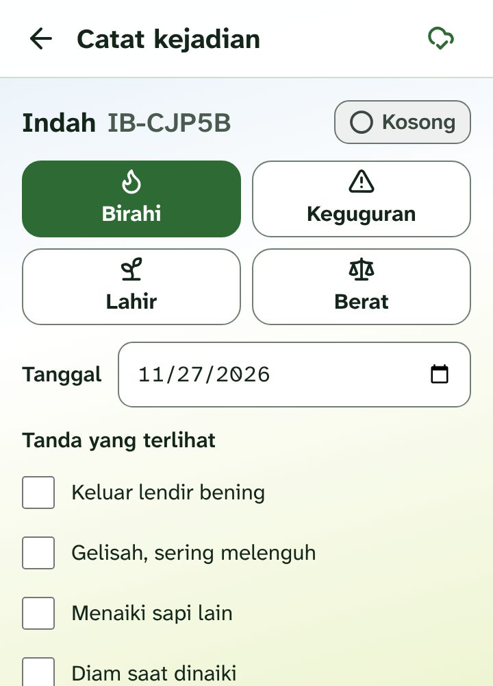
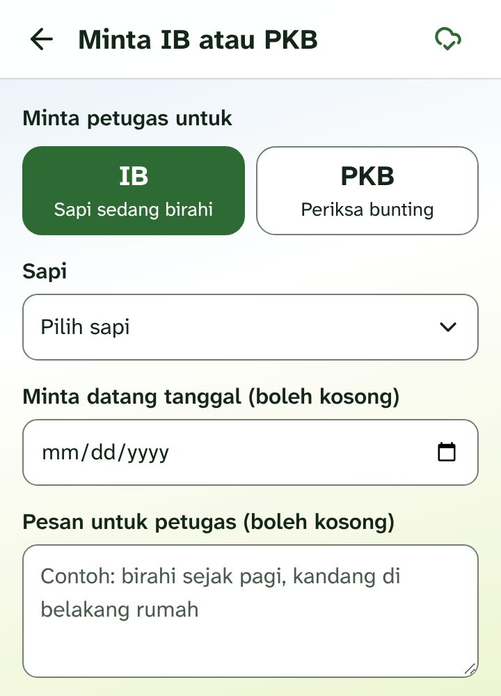
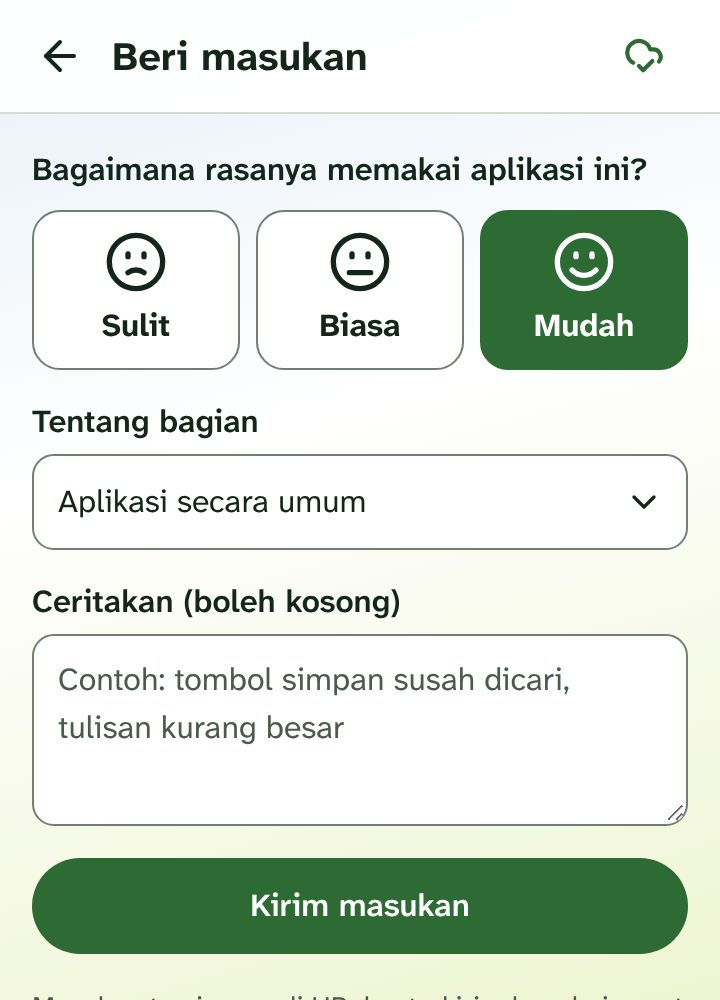

IB Ternak untuk Peternak
Catat birahi dan kelahiran sapi, lalu minta petugas IB atau PKB dari HP.
-

Masuk
Buka alamat di atas. Isi nomor HP dan password dari petugas, lalu tekan Masuk. Pasang PIN agar berikutnya cukup dengan PIN.
-

Lihat Hari ini
Berisi sapi yang perlu diperhatikan, misalnya waktunya periksa bunting atau perkiraan lahir.
-

Buka sapi
Menu Ternak, pilih sapi. Terlihat status sekarang (kosong, birahi, bunting, …) dan riwayatnya.
-

Catat birahi atau lahir
Di profil sapi tekan Catat kejadian, pilih Birahi/Lahir/Keguguran/Berat, centang tanda yang terlihat, lalu Simpan.
-

Minta petugas
Menu Tugas → Minta petugas IB atau PKB. Pilih sapi, tulis pesan, tekan Ajukan. Admin menugaskan petugas.
-

Beri masukan
Menu Lainnya → Beri masukan. Pilih wajah dan ceritakan yang sulit. Sangat membantu uji coba.